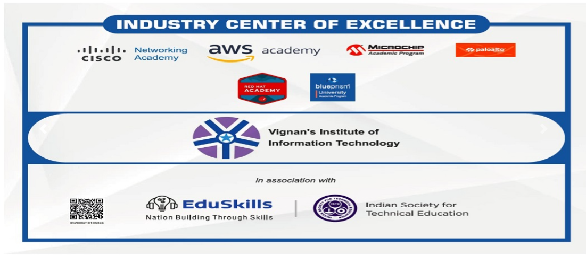

Considering the large number of students pursuing various courses from Vignan's Institute of Information Technology, Visakhapatnam, and Central Training & Placement Cell (CTPC) has been constituted.
In order to execute this effectively, the placement cell collaborates with a number of Industries and Companies across various sectors. This helps in identifying the training needs and accordingly, training programs are facilitated to students. The main focus of the department is to train the students and to bestow them with the right opportunities for their careers.

Achievements
The Central Training & Placement Cell (CTPC) to cater to the needs of leading organizations in conducting campus interviews for the final year students. It is headed by a Training and Placement officers and supported by department placement coordinators
Through this ideathons,hackathons, program on Communication Development, Technical Aptitude, General Aptitude, and Personality Development, Group discussion, Memory power, Self confidence and Motivation are provided by expert professionals. The college provides enough opportunities for the students to get placed in the National and Multinational companies
Main objectives
1)Promote career counseling by organizing guest speakers by senior corporate personnel and by the alumni students.
2)Prepare students for various campus recruitments by arranging training in Aptitude tests, Group discussions, Preparing for Technical and HR interviews through professional trainers.
3)Organize campus recruitment for the students with National and Multinational Companies from all over India.
4)Manage Centralized Placement activities for all courses.